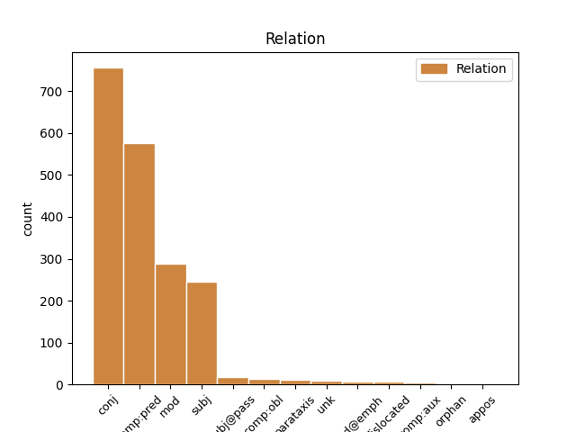
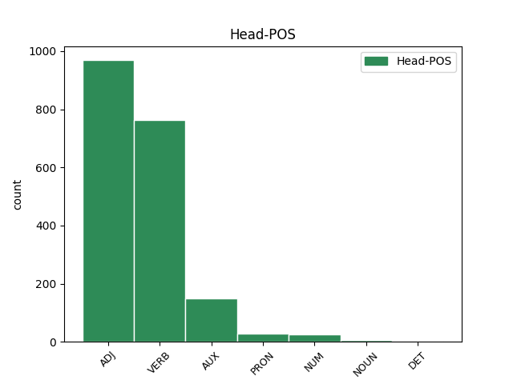
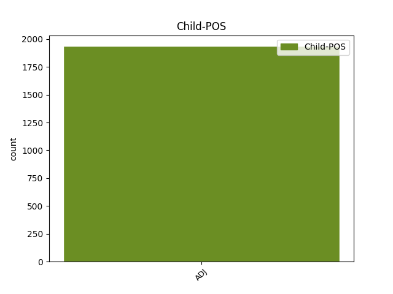

Distribution of features within this leaf



Agreement Rules sorted by frequency.
- When the dependent token is the conjunct(conj) of the head token, and the dependent token is ADJ.
1 و _ _ _ _ 0 _ _ _
2 أشار _ _ _ _ 0 _ _ _
3 العيار _ _ _ _ 0 _ _ _
4 الى _ _ _ _ 0 _ _ _
5 استمرار _ _ _ _ 0 _ _ _
6 المساعدات _ _ _ _ 0 _ _ _
7 و _ _ _ _ 0 _ _ _
8 في _ _ _ _ 0 _ _ _
9 جميع _ _ _ _ 0 _ _ _
10 المجالات _ _ _ _ 0 _ _ _
11 الغذائية _ _ _ _ 0 _ _ _
12 و _ _ _ _ 0 _ _ _
13 الدوائية دَوَائِيّ ADJ A-----FS2D Case=Gen|Definite=Def|Gender=Fem|Number=Sing 0 _ _ _
14 و _ _ _ _ 0 _ _ _
15 الصحية صِحِّيّ ADJ A-----FS2D Case=Gen|Definite=Def|Gender=Fem|Number=Sing 13 conj _ Gloss=health,healthy,sanitary|LTranslit=ṣiḥḥīy|Root=.s_.h_.h|Translit=aṣ-ṣiḥḥīyati|Vform=اَلصِّحِّيَّةِ
16 و _ _ _ _ 0 _ _ _
17 غير _ _ _ _ 0 _ _ _
18 ها _ _ _ _ 0 _ _ _
19 موضحا _ _ _ _ 0 _ _ _
20 أن _ _ _ _ 0 _ _ _
21 ما _ _ _ _ 0 _ _ _
22 يتعلق _ _ _ _ 0 _ _ _
23 ب _ _ _ _ 0 _ _ _
24 وزارة _ _ _ _ 0 _ _ _
25 الكهرباء _ _ _ _ 0 _ _ _
26 و _ _ _ _ 0 _ _ _
27 الماء _ _ _ _ 0 _ _ _
28 ف _ _ _ _ 0 _ _ _
29 إن _ _ _ _ 0 _ _ _
30 ها _ _ _ _ 0 _ _ _
31 لا _ _ _ _ 0 _ _ _
32 تزال _ _ _ _ 0 _ _ _
33 تقدم _ _ _ _ 0 _ _ _
34 المياه _ _ _ _ 0 _ _ _
35 العذبة _ _ _ _ 0 _ _ _
36 الى _ _ _ _ 0 _ _ _
37 العراق _ _ _ _ 0 _ _ _
38 " _ _ _ _ 0 _ _ _
39 ف _ _ _ _ 0 _ _ _
40 هناك _ _ _ _ 0 _ _ _
41 أنبوب _ _ _ _ 0 _ _ _
42 يصب _ _ _ _ 0 _ _ _
43 يوميا _ _ _ _ 0 _ _ _
44 في _ _ _ _ 0 _ _ _
45 العراق _ _ _ _ 0 _ _ _
46 ب _ _ _ _ 0 _ _ _
47 طاقة _ _ _ _ 0 _ _ _
48 مليون _ _ _ _ 0 _ _ _
49 و _ _ _ _ 0 _ _ _
50 نصف _ _ _ _ 0 _ _ _
51 المليون _ _ _ _ 0 _ _ _
52 جالون _ _ _ _ 0 _ _ _
53 " _ _ _ _ 0 _ _ _
54 . _ _ _ _ 0 _ _ _
1 و _ _ _ _ 0 _ _ _
2 أكد أَكَّد VERB VP-A-3MS-- Aspect=Perf|Gender=Masc|Number=Sing|Person=3|Voice=Act 0 _ _ _
3 شعث _ _ _ _ 0 _ _ _
4 فى _ _ _ _ 0 _ _ _
5 الاتصال _ _ _ _ 0 _ _ _
6 على _ _ _ _ 0 _ _ _
7 ضرورة _ _ _ _ 0 _ _ _
8 قبول _ _ _ _ 0 _ _ _
9 الجانب _ _ _ _ 0 _ _ _
10 الإسرائيلى _ _ _ _ 0 _ _ _
11 الخطة _ _ _ _ 0 _ _ _
12 بدون _ _ _ _ 0 _ _ _
13 تعديل _ _ _ _ 0 _ _ _
14 من _ _ _ _ 0 _ _ _
15 اجل _ _ _ _ 0 _ _ _
16 الاسراع _ _ _ _ 0 _ _ _
17 فى _ _ _ _ 0 _ _ _
18 تنفيذ _ _ _ _ 0 _ _ _
19 ها _ _ _ _ 0 _ _ _
20 على _ _ _ _ 0 _ _ _
21 الواقع _ _ _ _ 0 _ _ _
22 موضحا مُوَضِّح ADJ A-----MS4I Case=Acc|Definite=Ind|Gender=Masc|Number=Sing 2 comp:pred _ Gloss=clarifying,explaining,indicating|LTranslit=muwaḍḍiḥ|Root=w_.d_.h|Translit=muwaḍḍiḥan|Vform=مُوَضِّحًا
23 ان _ _ _ _ 0 _ _ _
24 الجانب _ _ _ _ 0 _ _ _
25 الفلسطينى _ _ _ _ 0 _ _ _
26 يعلق _ _ _ _ 0 _ _ _
27 آمالا _ _ _ _ 0 _ _ _
28 على _ _ _ _ 0 _ _ _
29 لقاء _ _ _ _ 0 _ _ _
30 الرئيس _ _ _ _ 0 _ _ _
31 المصرى _ _ _ _ 0 _ _ _
32 حسنى _ _ _ _ 0 _ _ _
33 مبارك _ _ _ _ 0 _ _ _
34 مع _ _ _ _ 0 _ _ _
35 باول _ _ _ _ 0 _ _ _
36 غدا _ _ _ _ 0 _ _ _
37 الاحد _ _ _ _ 0 _ _ _
38 . _ _ _ _ 0 _ _ _
1 و _ _ _ _ 0 _ _ _
2 من _ _ _ _ 0 _ _ _
3 المقرر _ _ _ _ 0 _ _ _
4 ان _ _ _ _ 0 _ _ _
5 يعقد _ _ _ _ 0 _ _ _
6 مايرز _ _ _ _ 0 _ _ _
7 وبريمر _ _ _ _ 0 _ _ _
8 اللذان _ _ _ _ 0 _ _ _
9 وصلا _ _ _ _ 0 _ _ _
10 الى _ _ _ _ 0 _ _ _
11 الكويت _ _ _ _ 0 _ _ _
12 قادمين _ _ _ _ 0 _ _ _
13 من _ _ _ _ 0 _ _ _
14 الدوحة _ _ _ _ 0 _ _ _
15 سلسلة _ _ _ _ 0 _ _ _
16 لقاءات _ _ _ _ 0 _ _ _
17 مع _ _ _ _ 0 _ _ _
18 عدد _ _ _ _ 0 _ _ _
19 من _ _ _ _ 0 _ _ _
20 المسؤولين مَسؤُول ADJ A-----MP2D Case=Gen|Definite=Def|Gender=Masc|Number=Plur 0 _ _ _
21 الكويتيين كُوَيتِيّ ADJ A-----MP2D Case=Gen|Definite=Def|Gender=Masc|Number=Plur 20 mod _ Gloss=Kuwaiti|LTranslit=kuwaytīy|Root=k_w_t|Translit=al-kuwaytīyīna|Vform=اَلكُوَيتِيِّينَ
22 اضافة _ _ _ _ 0 _ _ _
23 الى _ _ _ _ 0 _ _ _
24 قيام _ _ _ _ 0 _ _ _
25 هما _ _ _ _ 0 _ _ _
26 ب _ _ _ _ 0 _ _ _
27 تفقد _ _ _ _ 0 _ _ _
28 القوات _ _ _ _ 0 _ _ _
29 الامريكية _ _ _ _ 0 _ _ _
30 في _ _ _ _ 0 _ _ _
31 الكويت _ _ _ _ 0 _ _ _
32 . _ _ _ _ 0 _ _ _
1 كان كَان VERB VP-A-3MS-- Aspect=Perf|Gender=Masc|Number=Sing|Person=3|Voice=Act 0 _ _ _
2 كبير كَبِير ADJ A-----MS1R Case=Nom|Definite=Cons|Gender=Masc|Number=Sing 1 subj _ Gloss=adults,great,important,large,senior|LTranslit=kabīr|Root=k_b_r|Translit=kabīru|Vform=كَبِيرُ
3 المفاوضين _ _ _ _ 0 _ _ _
4 قد _ _ _ _ 0 _ _ _
5 وصل _ _ _ _ 0 _ _ _
6 الى _ _ _ _ 0 _ _ _
7 سريلانكا _ _ _ _ 0 _ _ _
8 فى _ _ _ _ 0 _ _ _
9 نهاية _ _ _ _ 0 _ _ _
10 ابريل _ _ _ _ 0 _ _ _
11 ، _ _ _ _ 0 _ _ _
12 عقب _ _ _ _ 0 _ _ _
13 اعلان _ _ _ _ 0 _ _ _
14 المتمردين _ _ _ _ 0 _ _ _
15 يوم _ _ _ _ 0 _ _ _
16 21 _ _ _ _ 0 _ _ _
17 ابريل _ _ _ _ 0 _ _ _
18 تعليق _ _ _ _ 0 _ _ _
19 محادثات _ _ _ _ 0 _ _ _
20 السلام _ _ _ _ 0 _ _ _
21 مع _ _ _ _ 0 _ _ _
22 الحكومة _ _ _ _ 0 _ _ _
23 التى _ _ _ _ 0 _ _ _
24 تمت _ _ _ _ 0 _ _ _
25 ب _ _ _ _ 0 _ _ _
26 وساطة _ _ _ _ 0 _ _ _
27 نرويجية _ _ _ _ 0 _ _ _
28 . _ _ _ _ 0 _ _ _
1 أعلن _ _ _ _ 0 _ _ _
2 مفتي _ _ _ _ 0 _ _ _
3 مصر _ _ _ _ 0 _ _ _
4 الدكتور _ _ _ _ 0 _ _ _
5 علي _ _ _ _ 0 _ _ _
6 جمعة _ _ _ _ 0 _ _ _
7 في _ _ _ _ 0 _ _ _
8 تصريحات _ _ _ _ 0 _ _ _
9 صحافية _ _ _ _ 0 _ _ _
10 تخوف _ _ _ _ 0 _ _ _
11 ه _ _ _ _ 0 _ _ _
12 من _ _ _ _ 0 _ _ _
13 أن _ _ _ _ 0 _ _ _
14 تكون _ _ _ _ 0 _ _ _
15 هذه _ _ _ _ 0 _ _ _
16 الخطوة _ _ _ _ 0 _ _ _
17 الفرنسية _ _ _ _ 0 _ _ _
18 مقدمة _ _ _ _ 0 _ _ _
19 ل _ _ _ _ 0 _ _ _
20 خطوات _ _ _ _ 0 _ _ _
21 أكبر _ _ _ _ 0 _ _ _
22 ل _ _ _ _ 0 _ _ _
23 ضرب _ _ _ _ 0 _ _ _
24 الوجود _ _ _ _ 0 _ _ _
25 الإسلامي _ _ _ _ 0 _ _ _
26 في _ _ _ _ 0 _ _ _
27 فرنسا _ _ _ _ 0 _ _ _
28 حيث _ _ _ _ 0 _ _ _
29 يوجد وَجَد VERB VIIP-3MS-- Aspect=Imp|Gender=Masc|Mood=Ind|Number=Sing|Person=3|VerbForm=Fin|Voice=Pass 0 _ _ _
30 أكبر أَكبَر ADJ A-----MS1R Case=Nom|Definite=Cons|Gender=Masc|Number=Sing 29 subj@pass _ Gloss=greater_/_greatest,larger_/_largest|LTranslit=ʾakbar|Root=k_b_r|Translit=ʾakbaru|Vform=أَكبَرُ
31 عدد _ _ _ _ 0 _ _ _
32 من _ _ _ _ 0 _ _ _
33 المسلمين _ _ _ _ 0 _ _ _
34 . _ _ _ _ 0 _ _ _
1 و _ _ _ _ 0 _ _ _
2 قال قَال VERB VP-A-3MS-- Aspect=Perf|Gender=Masc|Number=Sing|Person=3|Voice=Act 0 _ _ _
3 مسئول _ _ _ _ 0 _ _ _
4 كبير _ _ _ _ 0 _ _ _
5 ب _ _ _ _ 0 _ _ _
6 اتحاد _ _ _ _ 0 _ _ _
7 الصناعة _ _ _ _ 0 _ _ _
8 " _ _ _ _ 0 _ _ _
9 إن _ _ _ _ 0 _ _ _
10 نا _ _ _ _ 0 _ _ _
11 قريبون قَرِيب ADJ A-----MP1I Case=Nom|Definite=Ind|Gender=Masc|Number=Plur 2 comp:obl _ Gloss=close,near,recent,soon|LTranslit=qarīb|Root=q_r_b|Translit=qarībūna|Vform=قَرِيبُونَ
12 من _ _ _ _ 0 _ _ _
13 العراق _ _ _ _ 0 _ _ _
14 و _ _ _ _ 0 _ _ _
15 لذا _ _ _ _ 0 _ _ _
16 من _ _ _ _ 0 _ _ _
17 غير _ _ _ _ 0 _ _ _
18 المحتمل _ _ _ _ 0 _ _ _
19 ان _ _ _ _ 0 _ _ _
20 تعطي _ _ _ _ 0 _ _ _
21 نا _ _ _ _ 0 _ _ _
22 الولايات _ _ _ _ 0 _ _ _
23 المتحدة _ _ _ _ 0 _ _ _
24 عقودا _ _ _ _ 0 _ _ _
25 من _ _ _ _ 0 _ _ _
26 الباطن _ _ _ _ 0 _ _ _
27 . _ _ _ _ 0 _ _ _
28 و _ _ _ _ 0 _ _ _
29 س _ _ _ _ 0 _ _ _
30 تكون _ _ _ _ 0 _ _ _
31 الكعكة _ _ _ _ 0 _ _ _
32 الكبرى _ _ _ _ 0 _ _ _
33 من _ _ _ _ 0 _ _ _
34 نصيب _ _ _ _ 0 _ _ _
35 الولايات _ _ _ _ 0 _ _ _
36 المتحدة _ _ _ _ 0 _ _ _
37 و _ _ _ _ 0 _ _ _
38 هناك _ _ _ _ 0 _ _ _
39 فرصة _ _ _ _ 0 _ _ _
40 ضئيلة _ _ _ _ 0 _ _ _
41 ل _ _ _ _ 0 _ _ _
42 حصول _ _ _ _ 0 _ _ _
43 نا _ _ _ _ 0 _ _ _
44 على _ _ _ _ 0 _ _ _
45 عقود _ _ _ _ 0 _ _ _
46 الباطن _ _ _ _ 0 _ _ _
47 " _ _ _ _ 0 _ _ _
48 . _ _ _ _ 0 _ _ _
1 " _ _ _ _ 0 _ _ _
2 لم _ _ _ _ 0 _ _ _
3 يتحدث تَحَدَّث VERB VIJA-3MS-- Aspect=Imp|Gender=Masc|Mood=Jus|Number=Sing|Person=3|VerbForm=Fin|Voice=Act 0 _ _ _
4 أحد _ _ _ _ 0 _ _ _
5 ( _ _ _ _ 0 _ _ _
6 من _ _ _ _ 0 _ _ _
7 الأمريكيين _ _ _ _ 0 _ _ _
8 ) _ _ _ _ 0 _ _ _
9 عن _ _ _ _ 0 _ _ _
10 مشاكل _ _ _ _ 0 _ _ _
11 سياسية _ _ _ _ 0 _ _ _
12 " _ _ _ _ 0 _ _ _
13 ، _ _ _ _ 0 _ _ _
14 مشيرا مُشِير ADJ A-----MS4I Case=Acc|Definite=Ind|Gender=Masc|Number=Sing 3 unk _ Gloss=indicating,indicative|LTranslit=mušīr|Root=^s_w_r|Translit=mušīran|Vform=مُشِيرًا
15 إلى _ _ _ _ 0 _ _ _
16 أن _ _ _ _ 0 _ _ _
17 واشنطن _ _ _ _ 0 _ _ _
18 تتحدث _ _ _ _ 0 _ _ _
19 ب _ _ _ _ 0 _ _ _
20 صوت _ _ _ _ 0 _ _ _
21 واحد _ _ _ _ 0 _ _ _
22 في _ _ _ _ 0 _ _ _
23 ما _ _ _ _ 0 _ _ _
24 يتعلق _ _ _ _ 0 _ _ _
25 ب _ _ _ _ 0 _ _ _
26 اتفاق _ _ _ _ 0 _ _ _
27 التجارة _ _ _ _ 0 _ _ _
28 الحرة _ _ _ _ 0 _ _ _
29 التي _ _ _ _ 0 _ _ _
30 تأمل _ _ _ _ 0 _ _ _
31 مصر _ _ _ _ 0 _ _ _
32 إبرام _ _ _ _ 0 _ _ _
33 ها _ _ _ _ 0 _ _ _
34 . _ _ _ _ 0 _ _ _
1 قال قَال VERB VP-A-3MS-- Aspect=Perf|Gender=Masc|Number=Sing|Person=3|Voice=Act 0 _ _ _
2 خبير _ _ _ _ 0 _ _ _
3 صينى _ _ _ _ 0 _ _ _
4 ان _ _ _ _ 0 _ _ _
5 خطورة _ _ _ _ 0 _ _ _
6 مرض _ _ _ _ 0 _ _ _
7 السارس _ _ _ _ 0 _ _ _
8 اقل _ _ _ _ 0 _ _ _
9 مما _ _ _ _ 0 _ _ _
10 يتصور _ _ _ _ 0 _ _ _
11 ه _ _ _ _ 0 _ _ _
12 بعض _ _ _ _ 0 _ _ _
13 الناس _ _ _ _ 0 _ _ _
14 . _ _ _ _ 0 _ _ _
15 و _ _ _ _ 0 _ _ _
16 في _ _ _ _ 0 _ _ _
17 الحقيقة _ _ _ _ 0 _ _ _
18 ف _ _ _ _ 0 _ _ _
19 أن _ _ _ _ 0 _ _ _
20 نسبة _ _ _ _ 0 _ _ _
21 الوفيات _ _ _ _ 0 _ _ _
22 ب _ _ _ _ 0 _ _ _
23 السارس _ _ _ _ 0 _ _ _
24 أدنى أَدنَى ADJ A-----MS1I Case=Nom|Definite=Ind|Gender=Masc|Number=Sing 1 parataxis _ Gloss=lower_/_lowest,minimal,minimum,more_/_most_inferior,near_/_nearer_/_nearest|LTranslit=ʾadnā|Root=d_n_w|Translit=ʾadnā|Vform=أَدنَى
25 من _ _ _ _ 0 _ _ _
26 نسبة _ _ _ _ 0 _ _ _
27 ها _ _ _ _ 0 _ _ _
28 ب _ _ _ _ 0 _ _ _
29 سبب _ _ _ _ 0 _ _ _
30 الانفلونزا _ _ _ _ 0 _ _ _
31 الشديد _ _ _ _ 0 _ _ _
32 . _ _ _ _ 0 _ _ _
1 و _ _ _ _ 0 _ _ _
2 توقع _ _ _ _ 0 _ _ _
3 مسئول _ _ _ _ 0 _ _ _
4 حكومي _ _ _ _ 0 _ _ _
5 أن _ _ _ _ 0 _ _ _
6 يؤدي _ _ _ _ 0 _ _ _
7 هذا _ _ _ _ 0 _ _ _
8 إلى _ _ _ _ 0 _ _ _
9 خفض _ _ _ _ 0 _ _ _
10 أسعار _ _ _ _ 0 _ _ _
11 الحديد _ _ _ _ 0 _ _ _
12 المستورد _ _ _ _ 0 _ _ _
13 من _ _ _ _ 0 _ _ _
14 جانب _ _ _ _ 0 _ _ _
15 بعض _ _ _ _ 0 _ _ _
16 هذه _ _ _ _ 0 _ _ _
17 الدول _ _ _ _ 0 _ _ _
18 ب _ _ _ _ 0 _ _ _
19 أسعار _ _ _ _ 0 _ _ _
20 أقل _ _ _ _ 0 _ _ _
21 ، _ _ _ _ 0 _ _ _
22 خاصة _ _ _ _ 0 _ _ _
23 التي _ _ _ _ 0 _ _ _
24 تقوم _ _ _ _ 0 _ _ _
25 ب _ _ _ _ 0 _ _ _
26 تحديث _ _ _ _ 0 _ _ _
27 مصانع _ _ _ _ 0 _ _ _
28 ها _ _ _ _ 0 _ _ _
29 و _ _ _ _ 0 _ _ _
30 لدي _ _ _ _ 0 _ _ _
31 ها _ _ _ _ 0 _ _ _
32 طاقات _ _ _ _ 0 _ _ _
33 ضخمة _ _ _ _ 0 _ _ _
34 من _ _ _ _ 0 _ _ _
35 الخردة _ _ _ _ 0 _ _ _
36 ، _ _ _ _ 0 _ _ _
37 و _ _ _ _ 0 _ _ _
38 قال _ _ _ _ 0 _ _ _
39 المصدر _ _ _ _ 0 _ _ _
40 إن _ _ _ _ 0 _ _ _
41 هذا _ _ _ _ 0 _ _ _
42 لن _ _ _ _ 0 _ _ _
43 يضير _ _ _ _ 0 _ _ _
44 المصانع _ _ _ _ 0 _ _ _
45 المحلية _ _ _ _ 0 _ _ _
46 المنتجة _ _ _ _ 0 _ _ _
47 ل _ _ _ _ 0 _ _ _
48 مصانع _ _ _ _ 0 _ _ _
49 حديد _ _ _ _ 0 _ _ _
50 التسليح _ _ _ _ 0 _ _ _
51 في _ _ _ _ 0 _ _ _
52 شيء _ _ _ _ 0 _ _ _
53 خاصة خَاصّ ADJ A-----FS4I Case=Acc|Definite=Ind|Gender=Fem|Number=Sing 55 mod@emph _ Gloss=special,specific|LTranslit=ḫāṣṣ|Root=_h_.s_.s|Translit=ḫāṣṣatan|Vform=خَاصَّةً
54 التي _ _ _ _ 0 _ _ _
55 تملك مَلَك VERB VIIA-3FS-- Aspect=Imp|Gender=Fem|Mood=Ind|Number=Sing|Person=3|VerbForm=Fin|Voice=Act 0 _ _ _
56 طاقات _ _ _ _ 0 _ _ _
57 تصديرية _ _ _ _ 0 _ _ _
58 كبيرة _ _ _ _ 0 _ _ _
59 . _ _ _ _ 0 _ _ _
1 و _ _ _ _ 0 _ _ _
2 قد _ _ _ _ 0 _ _ _
3 نوه _ _ _ _ 0 _ _ _
4 باول _ _ _ _ 0 _ _ _
5 الى _ _ _ _ 0 _ _ _
6 حرص _ _ _ _ 0 _ _ _
7 بلاد _ _ _ _ 0 _ _ _
8 ه _ _ _ _ 0 _ _ _
9 على _ _ _ _ 0 _ _ _
10 وحدة _ _ _ _ 0 _ _ _
11 العراق _ _ _ _ 0 _ _ _
12 مؤكدا _ _ _ _ 0 _ _ _
13 ان _ _ _ _ 0 _ _ _
14 اى أَيّ ADJ A-----MS4R Case=Acc|Definite=Cons|Gender=Masc|Number=Sing 20 dislocated _ Gloss=any,what,whatever,which,whichever|LTranslit=ʾayy|Root='_y_y|Translit=ʾayya|Vform=أَيَّ
15 حكومة _ _ _ _ 0 _ _ _
16 س _ _ _ _ 0 _ _ _
17 تشكل _ _ _ _ 0 _ _ _
18 فى _ _ _ _ 0 _ _ _
19 المستقبل _ _ _ _ 0 _ _ _
20 يجب وَجَب VERB VIIA-3MS-- Aspect=Imp|Gender=Masc|Mood=Ind|Number=Sing|Person=3|VerbForm=Fin|Voice=Act 0 _ _ _
21 ان _ _ _ _ 0 _ _ _
22 تمثل _ _ _ _ 0 _ _ _
23 كافة _ _ _ _ 0 _ _ _
24 فئات _ _ _ _ 0 _ _ _
25 الشعب _ _ _ _ 0 _ _ _
26 العراقى _ _ _ _ 0 _ _ _
27 و _ _ _ _ 0 _ _ _
28 أن _ _ _ _ 0 _ _ _
29 ها _ _ _ _ 0 _ _ _
30 س _ _ _ _ 0 _ _ _
31 تكون _ _ _ _ 0 _ _ _
32 على _ _ _ _ 0 _ _ _
33 علاقات _ _ _ _ 0 _ _ _
34 طيبة _ _ _ _ 0 _ _ _
35 مع _ _ _ _ 0 _ _ _
36 دول _ _ _ _ 0 _ _ _
37 الجوار _ _ _ _ 0 _ _ _
38 و _ _ _ _ 0 _ _ _
39 خاصة _ _ _ _ 0 _ _ _
40 سورية _ _ _ _ 0 _ _ _
41 . _ _ _ _ 0 _ _ _
1 و _ _ _ _ 0 _ _ _
2 قال _ _ _ _ 0 _ _ _
3 سوتارتو _ _ _ _ 0 _ _ _
4 " _ _ _ _ 0 _ _ _
5 دعوا _ _ _ _ 0 _ _ _
6 المتمردين _ _ _ _ 0 _ _ _
7 يواجهون _ _ _ _ 0 _ _ _
8 القوات _ _ _ _ 0 _ _ _
9 المسلحة _ _ _ _ 0 _ _ _
10 الوطنية _ _ _ _ 0 _ _ _
11 وحد _ _ _ _ 0 _ _ _
12 ها _ _ _ _ 0 _ _ _
13 ، _ _ _ _ 0 _ _ _
14 و _ _ _ _ 0 _ _ _
15 ليس لَيس AUX VP-A-3MS-- Aspect=Perf|Gender=Masc|Number=Sing|Person=3|Voice=Act 0 _ _ _
16 اى أَيّ ADJ A-----MS4R Case=Acc|Definite=Cons|Gender=Masc|Number=Sing 15 comp:aux _ Gloss=any,what,whatever,which,whichever|LTranslit=ʾayy|Root='_y_y|Translit=ʾayya|Vform=أَيَّ
17 طرف _ _ _ _ 0 _ _ _
18 اخر _ _ _ _ 0 _ _ _
19 " _ _ _ _ 0 _ _ _
20 و _ _ _ _ 0 _ _ _
21 قال _ _ _ _ 0 _ _ _
22 ان _ _ _ _ 0 _ _ _
23 نشاط _ _ _ _ 0 _ _ _
24 الصناعات _ _ _ _ 0 _ _ _
25 المستهدفة _ _ _ _ 0 _ _ _
26 يجب _ _ _ _ 0 _ _ _
27 ان _ _ _ _ 0 _ _ _
28 يستمر _ _ _ _ 0 _ _ _
29 . _ _ _ _ 0 _ _ _
1 تمر _ _ _ _ 0 _ _ _
2 سوق _ _ _ _ 0 _ _ _
3 العقار _ _ _ _ 0 _ _ _
4 المصرية _ _ _ _ 0 _ _ _
5 ب _ _ _ _ 0 _ _ _
6 مرحلة _ _ _ _ 0 _ _ _
7 خطرة _ _ _ _ 0 _ _ _
8 ب _ _ _ _ 0 _ _ _
9 سبب _ _ _ _ 0 _ _ _
10 ارتفاع _ _ _ _ 0 _ _ _
11 نسبة _ _ _ _ 0 _ _ _
12 الركود _ _ _ _ 0 _ _ _
13 و _ _ _ _ 0 _ _ _
14 تراجع _ _ _ _ 0 _ _ _
15 المبيعات _ _ _ _ 0 _ _ _
16 على _ _ _ _ 0 _ _ _
17 رغم _ _ _ _ 0 _ _ _
18 انخفاض _ _ _ _ 0 _ _ _
19 الاسعار _ _ _ _ 0 _ _ _
20 ب _ _ _ _ 0 _ _ _
21 نسبة _ _ _ _ 0 _ _ _
22 25 _ _ _ _ 0 _ _ _
23 في _ _ _ _ 0 _ _ _
24 المئة _ _ _ _ 0 _ _ _
25 . _ _ _ _ 0 _ _ _
26 و _ _ _ _ 0 _ _ _
27 لحق _ _ _ _ 0 _ _ _
28 التراجع _ _ _ _ 0 _ _ _
29 ب _ _ _ _ 0 _ _ _
30 كل _ _ _ _ 0 _ _ _
31 أنواع _ _ _ _ 0 _ _ _
32 الوحدات _ _ _ _ 0 _ _ _
33 المعروضة _ _ _ _ 0 _ _ _
34 لٰكن _ _ _ _ 0 _ _ _
35 ه _ _ _ _ 0 _ _ _
36 يزيد _ _ _ _ 0 _ _ _
37 اكثر _ _ _ _ 0 _ _ _
38 في _ _ _ _ 0 _ _ _
39 الاسكان _ _ _ _ 0 _ _ _
40 الفاخر _ _ _ _ 0 _ _ _
41 و _ _ _ _ 0 _ _ _
42 السياحي _ _ _ _ 0 _ _ _
43 في _ _ _ _ 0 _ _ _
44 مقابل _ _ _ _ 0 _ _ _
45 فوق _ _ _ _ 0 _ _ _
46 المتوسط _ _ _ _ 0 _ _ _
47 و _ _ _ _ 0 _ _ _
48 المتوسط مُتَوَسِّط ADJ A-----MS2D Case=Gen|Definite=Def|Gender=Masc|Number=Sing 0 _ _ _
49 ( _ _ _ _ 0 _ _ _
50 الشعبي شَعبِيّ ADJ A-----MS2D Case=Gen|Definite=Def|Gender=Masc|Number=Sing 48 appos _ Gloss=national,people's,popular|LTranslit=šaʿbīy|Root=^s_`_b|SpaceAfter=No|Translit=aš-šaʿbīyi|Vform=اَلشَّعبِيِّ
51 ) _ _ _ _ 0 _ _ _
52 . _ _ _ _ 0 _ _ _
1 و _ _ _ _ 0 _ _ _
2 لم _ _ _ _ 0 _ _ _
3 يبد _ _ _ _ 0 _ _ _
4 شيخ _ _ _ _ 0 _ _ _
5 الأزهر _ _ _ _ 0 _ _ _
6 ندماً _ _ _ _ 0 _ _ _
7 على _ _ _ _ 0 _ _ _
8 استقبال _ _ _ _ 0 _ _ _
9 ه _ _ _ _ 0 _ _ _
10 ل _ _ _ _ 0 _ _ _
11 الحاخام _ _ _ _ 0 _ _ _
12 الإسرائيلي _ _ _ _ 0 _ _ _
13 الأكبر _ _ _ _ 0 _ _ _
14 " _ _ _ _ 0 _ _ _
15 لاو _ _ _ _ 0 _ _ _
16 " _ _ _ _ 0 _ _ _
17 في _ _ _ _ 0 _ _ _
18 وقت _ _ _ _ 0 _ _ _
19 سابق _ _ _ _ 0 _ _ _
20 ، _ _ _ _ 0 _ _ _
21 و _ _ _ _ 0 _ _ _
22 قال _ _ _ _ 0 _ _ _
23 : _ _ _ _ 0 _ _ _
24 إذا _ _ _ _ 0 _ _ _
25 جاء _ _ _ _ 0 _ _ _
26 ني _ _ _ _ 0 _ _ _
27 عدو _ _ _ _ 0 _ _ _
28 ي _ _ _ _ 0 _ _ _
29 سواء _ _ _ _ 0 _ _ _
30 كان _ _ _ _ 0 _ _ _
31 إسرائيلياً _ _ _ _ 0 _ _ _
32 أو _ _ _ _ 0 _ _ _
33 غير _ _ _ _ 0 _ _ _
34 إسرائيلي _ _ _ _ 0 _ _ _
35 لكي _ _ _ _ 0 _ _ _
36 يزوروا _ _ _ _ 0 _ _ _
37 ني _ _ _ _ 0 _ _ _
38 أو _ _ _ _ 0 _ _ _
39 يسأل _ _ _ _ 0 _ _ _
40 ني _ _ _ _ 0 _ _ _
41 أو _ _ _ _ 0 _ _ _
42 يتفاهم _ _ _ _ 0 _ _ _
43 على _ _ _ _ 0 _ _ _
44 شيء _ _ _ _ 0 _ _ _
45 ف _ _ _ _ 0 _ _ _
46 لازم _ _ _ _ 0 _ _ _
47 أسمع _ _ _ _ 0 _ _ _
48 من _ _ _ _ 0 _ _ _
49 ه _ _ _ _ 0 _ _ _
50 ، _ _ _ _ 0 _ _ _
51 إذا _ _ _ _ 0 _ _ _
52 قال قَال VERB VP-A-3MS-- Aspect=Perf|Gender=Masc|Number=Sing|Person=3|Voice=Act 0 _ _ _
53 كلاماً _ _ _ _ 0 _ _ _
54 حسناً _ _ _ _ 0 _ _ _
55 أهلا أَهل ADJ A-----MS4I Case=Acc|Definite=Ind|Gender=Masc|Number=Sing 52 orphan _ Gloss=qualified|LTranslit=ʾahl|Root='_h_l|Translit=ʾahlan|Vform=أَهلًا
56 و _ _ _ _ 0 _ _ _
57 سهلا _ _ _ _ 0 _ _ _
58 و _ _ _ _ 0 _ _ _
59 إذا _ _ _ _ 0 _ _ _
60 قال _ _ _ _ 0 _ _ _
61 غير _ _ _ _ 0 _ _ _
62 ذلك _ _ _ _ 0 _ _ _
63 ف _ _ _ _ 0 _ _ _
64 س _ _ _ _ 0 _ _ _
65 أرد _ _ _ _ 0 _ _ _
66 علي _ _ _ _ 0 _ _ _
67 ه _ _ _ _ 0 _ _ _
68 و _ _ _ _ 0 _ _ _
69 أخزي _ _ _ _ 0 _ _ _
70 ه _ _ _ _ 0 _ _ _
71 ، _ _ _ _ 0 _ _ _
72 مشيرا _ _ _ _ 0 _ _ _
73 إلى _ _ _ _ 0 _ _ _
74 أن _ _ _ _ 0 _ _ _
75 الرسول _ _ _ _ 0 _ _ _
76 صلى _ _ _ _ 0 _ _ _
77 الله _ _ _ _ 0 _ _ _
78 علي _ _ _ _ 0 _ _ _
79 ه _ _ _ _ 0 _ _ _
80 و _ _ _ _ 0 _ _ _
81 سلم _ _ _ _ 0 _ _ _
82 كان _ _ _ _ 0 _ _ _
83 يستقبل _ _ _ _ 0 _ _ _
84 زعماء _ _ _ _ 0 _ _ _
85 اليهود _ _ _ _ 0 _ _ _
86 و _ _ _ _ 0 _ _ _
87 يستمع _ _ _ _ 0 _ _ _
88 إلي _ _ _ _ 0 _ _ _
89 هم _ _ _ _ 0 _ _ _
90 . _ _ _ _ 0 _ _ _
Disagree Examples:
1 و _ _ _ _ 0 _ _ _
2 أضاف _ _ _ _ 0 _ _ _
3 ارخيبوف _ _ _ _ 0 _ _ _
4 ان _ _ _ _ 0 _ _ _
5 المنافسة _ _ _ _ 0 _ _ _
6 ل _ _ _ _ 0 _ _ _
7 الفوز _ _ _ _ 0 _ _ _
8 ب _ _ _ _ 0 _ _ _
9 عقود _ _ _ _ 0 _ _ _
10 الطيران _ _ _ _ 0 _ _ _
11 العسكري _ _ _ _ 0 _ _ _
12 الاوروبي _ _ _ _ 0 _ _ _
13 قاسية _ _ _ _ 0 _ _ _
14 ، _ _ _ _ 0 _ _ _
15 لأن _ _ _ _ 0 _ _ _
16 الولايات _ _ _ _ 0 _ _ _
17 المتحدة _ _ _ _ 0 _ _ _
18 تعرض _ _ _ _ 0 _ _ _
19 طائرات _ _ _ _ 0 _ _ _
20 ها _ _ _ _ 0 _ _ _
21 اف _ _ _ _ 0 _ _ _
22 - _ _ _ _ 0 _ _ _
23 16 _ _ _ _ 0 _ _ _
24 ب _ _ _ _ 0 _ _ _
25 أسعار _ _ _ _ 0 _ _ _
26 متدنية _ _ _ _ 0 _ _ _
27 جدا _ _ _ _ 0 _ _ _
28 و _ _ _ _ 0 _ _ _
29 لأن _ _ _ _ 0 _ _ _
30 اوروبا _ _ _ _ 0 _ _ _
31 تسعى _ _ _ _ 0 _ _ _
32 الى _ _ _ _ 0 _ _ _
33 تطوير _ _ _ _ 0 _ _ _
34 طائرات _ _ _ _ 0 _ _ _
35 ها _ _ _ _ 0 _ _ _
36 المقاتلة _ _ _ _ 0 _ _ _
37 " _ _ _ _ 0 _ _ _
38 يوروفايتر _ _ _ _ 0 _ _ _
39 " _ _ _ _ 0 _ _ _
40 . _ _ _ _ 0 _ _ _
41 لكن _ _ _ _ 0 _ _ _
42 اي أَيّ ADJ A-----MS4R Case=Acc|Definite=Cons|Gender=Masc|Number=Sing 44 subj _ Gloss=any,what,whatever,which,whichever|LTranslit=ʾayy|Root='_y_y|Translit=ʾayya|Vform=أَيَّ
43 دولة _ _ _ _ 0 _ _ _
44 ليست لَيس AUX VP-A-3FS-- Aspect=Perf|Gender=Fem|Number=Sing|Person=3|Voice=Act 0 _ _ _
45 مستعدة _ _ _ _ 0 _ _ _
46 ل _ _ _ _ 0 _ _ _
47 التخلي _ _ _ _ 0 _ _ _
48 ب _ _ _ _ 0 _ _ _
49 الكامل _ _ _ _ 0 _ _ _
50 عن _ _ _ _ 0 _ _ _
51 طائرات _ _ _ _ 0 _ _ _
52 الميغ _ _ _ _ 0 _ _ _
53 الروسية _ _ _ _ 0 _ _ _
54 . _ _ _ _ 0 _ _ _
1 و _ _ _ _ 0 _ _ _
2 قال _ _ _ _ 0 _ _ _
3 " _ _ _ _ 0 _ _ _
4 ان _ _ _ _ 0 _ _ _
5 الوضع _ _ _ _ 0 _ _ _
6 صعب _ _ _ _ 0 _ _ _
7 " _ _ _ _ 0 _ _ _
8 لٰكن _ _ _ _ 0 _ _ _
9 ه _ _ _ _ 0 _ _ _
10 رفض _ _ _ _ 0 _ _ _
11 عرض _ _ _ _ 0 _ _ _
12 المساعدة _ _ _ _ 0 _ _ _
13 الذي _ _ _ _ 0 _ _ _
14 تقدمت _ _ _ _ 0 _ _ _
15 ب _ _ _ _ 0 _ _ _
16 ه _ _ _ _ 0 _ _ _
17 واشنطن _ _ _ _ 0 _ _ _
18 موضحا _ _ _ _ 0 _ _ _
19 " _ _ _ _ 0 _ _ _
20 لدي _ _ _ _ 0 _ _ _
21 نا _ _ _ _ 0 _ _ _
22 كل _ _ _ _ 0 _ _ _
23 الوسائل _ _ _ _ 0 _ _ _
24 الفنية _ _ _ _ 0 _ _ _
25 اللازمة _ _ _ _ 0 _ _ _
26 و _ _ _ _ 0 _ _ _
27 هي _ _ _ _ 0 _ _ _
28 ليست لَيس AUX VP-A-3FS-- Aspect=Perf|Gender=Fem|Number=Sing|Person=3|Voice=Act 0 _ _ _
29 اقل أَقَلّ ADJ A-----MS4R Case=Acc|Definite=Cons|Gender=Masc|Number=Sing 28 comp:pred _ Gloss=less_/_least,smaller_/_smallest|LTranslit=ʾaqall|Root=q_l_l|Translit=ʾaqalla|Vform=أَقَلَّ
30 مما _ _ _ _ 0 _ _ _
31 لدى _ _ _ _ 0 _ _ _
32 الاميركيين _ _ _ _ 0 _ _ _
33 " _ _ _ _ 0 _ _ _
34 . _ _ _ _ 0 _ _ _
1 و _ _ _ _ 0 _ _ _
2 رأى _ _ _ _ 0 _ _ _
3 بيلين _ _ _ _ 0 _ _ _
4 أن _ _ _ _ 0 _ _ _
5 ه _ _ _ _ 0 _ _ _
6 يمكن _ _ _ _ 0 _ _ _
7 التوصل _ _ _ _ 0 _ _ _
8 ب _ _ _ _ 0 _ _ _
9 نجاح _ _ _ _ 0 _ _ _
10 الى _ _ _ _ 0 _ _ _
11 اتفاق _ _ _ _ 0 _ _ _
12 ب _ _ _ _ 0 _ _ _
13 مساعدة _ _ _ _ 0 _ _ _
14 المبعوث _ _ _ _ 0 _ _ _
15 الاميركي _ _ _ _ 0 _ _ _
16 دنيس _ _ _ _ 0 _ _ _
17 روس _ _ _ _ 0 _ _ _
18 الذي _ _ _ _ 0 _ _ _
19 ينتظر _ _ _ _ 0 _ _ _
20 وصول _ _ _ _ 0 _ _ _
21 ه _ _ _ _ 0 _ _ _
22 الى _ _ _ _ 0 _ _ _
23 اسرائيل _ _ _ _ 0 _ _ _
24 في _ _ _ _ 0 _ _ _
25 20 _ _ _ _ 0 _ _ _
26 اب _ _ _ _ 0 _ _ _
27 / _ _ _ _ 0 _ _ _
28 اغسطس _ _ _ _ 0 _ _ _
29 على _ _ _ _ 0 _ _ _
30 ان _ _ _ _ 0 _ _ _
31 توضع _ _ _ _ 0 _ _ _
32 لمسات _ _ _ _ 0 _ _ _
33 ه هُوَ PRON SP---3MS2- Case=Gen|Gender=Masc|Number=Sing|Person=3|PronType=Prs 0 _ _ _
34 الاخيرة أَخِير ADJ A-----FS1D Case=Nom|Definite=Def|Gender=Fem|Number=Sing 33 mod _ Gloss=last,latest,latter,recent|LTranslit=ʾaḫīr|Root='__h_r|Translit=al-ʾaḫīratu|Vform=اَلأَخِيرَةُ
35 فى _ _ _ _ 0 _ _ _
36 قمة _ _ _ _ 0 _ _ _
37 جديدة _ _ _ _ 0 _ _ _
38 " _ _ _ _ 0 _ _ _
39 لن _ _ _ _ 0 _ _ _
40 تطول _ _ _ _ 0 _ _ _
41 اكثر _ _ _ _ 0 _ _ _
42 من _ _ _ _ 0 _ _ _
43 يوم _ _ _ _ 0 _ _ _
44 او _ _ _ _ 0 _ _ _
45 يومين _ _ _ _ 0 _ _ _
46 " _ _ _ _ 0 _ _ _
47 . _ _ _ _ 0 _ _ _
1 و _ _ _ _ 0 _ _ _
2 أوضح _ _ _ _ 0 _ _ _
3 رئيس _ _ _ _ 0 _ _ _
4 اللجنة _ _ _ _ 0 _ _ _
5 الانتخابية _ _ _ _ 0 _ _ _
6 الشيشانية _ _ _ _ 0 _ _ _
7 عبد _ _ _ _ 0 _ _ _
8 الكريم _ _ _ _ 0 _ _ _
9 ارساخانوف _ _ _ _ 0 _ _ _
10 ان _ _ _ _ 0 _ _ _
11 385 _ _ _ _ 0 _ _ _
12 مكتب _ _ _ _ 0 _ _ _
13 تصويت _ _ _ _ 0 _ _ _
14 قد _ _ _ _ 0 _ _ _
15 فتحت _ _ _ _ 0 _ _ _
16 في _ _ _ _ 0 _ _ _
17 الشيشان _ _ _ _ 0 _ _ _
18 من _ _ _ _ 0 _ _ _
19 ها _ _ _ _ 0 _ _ _
20 ثمانية ثَمَانِيَة NUM QV----M-1R Case=Nom|Definite=Cons|Gender=Masc|NumForm=Word|NumValue=3 0 _ _ _
21 مكاتب _ _ _ _ 0 _ _ _
22 مخصصة مُخَصَّص ADJ A-----FS1I Case=Nom|Definite=Ind|Gender=Fem|Number=Sing 20 mod _ Gloss=allocated,designated|LTranslit=muḫaṣṣaṣ|Root=_h_.s_.s|Translit=muḫaṣṣaṣatun|Vform=مُخَصَّصَةٌ
23 ل _ _ _ _ 0 _ _ _
24 الجنود _ _ _ _ 0 _ _ _
25 الروس _ _ _ _ 0 _ _ _
26 المنتشرين _ _ _ _ 0 _ _ _
27 في _ _ _ _ 0 _ _ _
28 الجمهورية _ _ _ _ 0 _ _ _
29 . _ _ _ _ 0 _ _ _
30 و _ _ _ _ 0 _ _ _
31 أضاف _ _ _ _ 0 _ _ _
32 " _ _ _ _ 0 _ _ _
33 لا _ _ _ _ 0 _ _ _
34 شك _ _ _ _ 0 _ _ _
35 في _ _ _ _ 0 _ _ _
36 ان _ _ _ _ 0 _ _ _
37 نسبة _ _ _ _ 0 _ _ _
38 المشاركة _ _ _ _ 0 _ _ _
39 س _ _ _ _ 0 _ _ _
40 تكون _ _ _ _ 0 _ _ _
41 مرتفعة _ _ _ _ 0 _ _ _
42 " _ _ _ _ 0 _ _ _
43 ، _ _ _ _ 0 _ _ _
44 موضحا _ _ _ _ 0 _ _ _
45 ان _ _ _ _ 0 _ _ _
46 الانتخابات _ _ _ _ 0 _ _ _
47 س _ _ _ _ 0 _ _ _
48 تجرى _ _ _ _ 0 _ _ _
49 " _ _ _ _ 0 _ _ _
50 طبقا _ _ _ _ 0 _ _ _
51 ل _ _ _ _ 0 _ _ _
52 القانون _ _ _ _ 0 _ _ _
53 " _ _ _ _ 0 _ _ _
54 . _ _ _ _ 0 _ _ _
1 موسكو _ _ _ _ 0 _ _ _
2 15 _ _ _ _ 0 _ _ _
3 - _ _ _ _ 0 _ _ _
4 8 _ _ _ _ 0 _ _ _
5 ( _ _ _ _ 0 _ _ _
6 اف _ _ _ _ 0 _ _ _
7 ب _ _ _ _ 0 _ _ _
8 ) _ _ _ _ 0 _ _ _
9 - _ _ _ _ 0 _ _ _
10 كانت كَان AUX VP-A-3FS-- Aspect=Perf|Gender=Fem|Number=Sing|Person=3|Voice=Act 0 _ _ _
11 فرضية _ _ _ _ 0 _ _ _
12 تفسير _ _ _ _ 0 _ _ _
13 غرق _ _ _ _ 0 _ _ _
14 الغواصة _ _ _ _ 0 _ _ _
15 الروسية _ _ _ _ 0 _ _ _
16 كورسك _ _ _ _ 0 _ _ _
17 في _ _ _ _ 0 _ _ _
18 بحر _ _ _ _ 0 _ _ _
19 بارنتس _ _ _ _ 0 _ _ _
20 نتيجة _ _ _ _ 0 _ _ _
21 ل _ _ _ _ 0 _ _ _
22 انفجار _ _ _ _ 0 _ _ _
23 الاكثر أَكثَر ADJ A-----MS2D Case=Gen|Definite=Def|Gender=Masc|Number=Sing 10 comp:pred _ Gloss=more,most|LTranslit=ʾakṯar|Root=k__t_r|Translit=al-ʾakṯari|Vform=اَلأَكثَرِ
24 احتمالا _ _ _ _ 0 _ _ _
25 اليوم _ _ _ _ 0 _ _ _
26 الثلاثاء _ _ _ _ 0 _ _ _
27 ولو _ _ _ _ 0 _ _ _
28 ان _ _ _ _ 0 _ _ _
29 السلطات _ _ _ _ 0 _ _ _
30 لا _ _ _ _ 0 _ _ _
31 تزال _ _ _ _ 0 _ _ _
32 ترجح _ _ _ _ 0 _ _ _
33 احتمال _ _ _ _ 0 _ _ _
34 اصطدام _ _ _ _ 0 _ _ _
35 الغواصة _ _ _ _ 0 _ _ _
36 ب _ _ _ _ 0 _ _ _
37 سفينة _ _ _ _ 0 _ _ _
38 اخرى _ _ _ _ 0 _ _ _
39 . _ _ _ _ 0 _ _ _